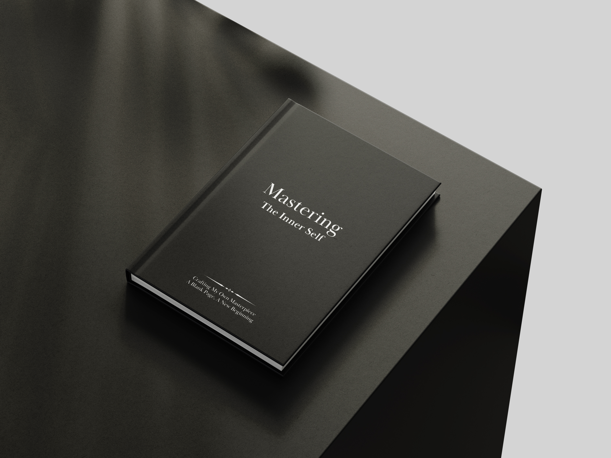
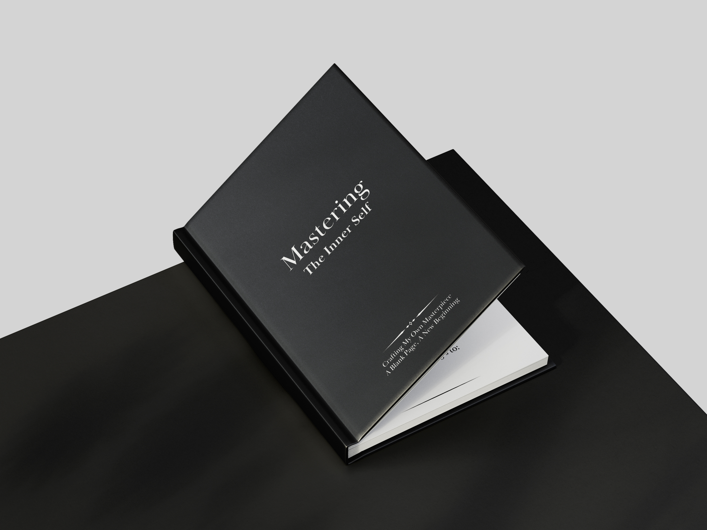
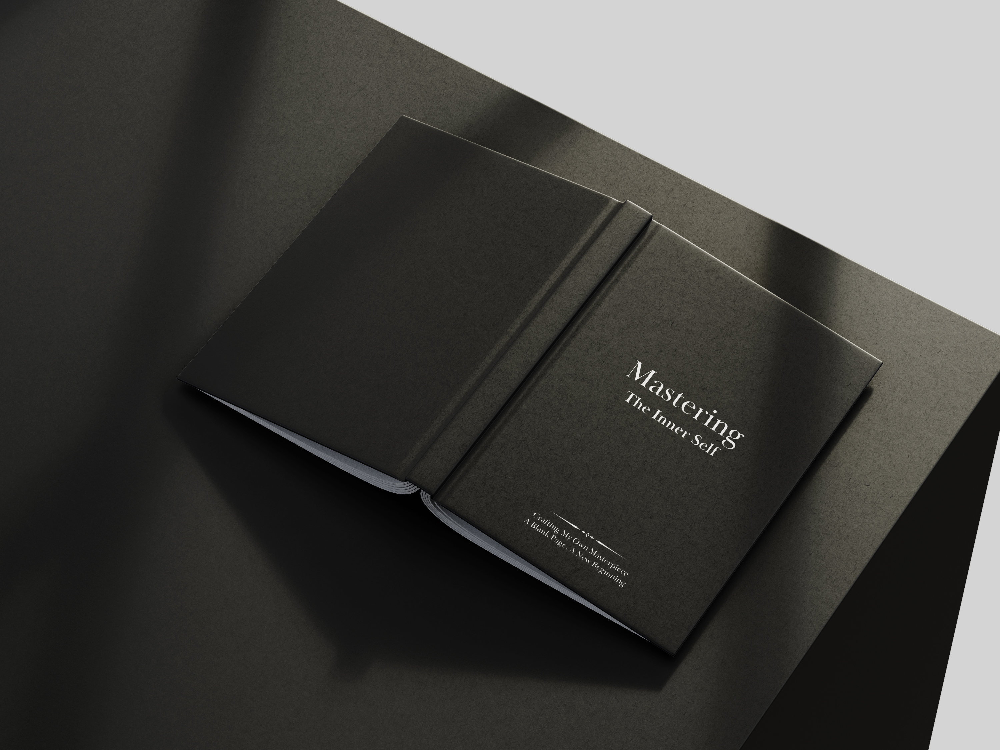

"Journaling isn't just about writing down feelings—it's about understanding yourself."
Discover clarity, growth, and the wisdom hidden within you.
I used to think journaling was only for people who loved writing or had their lives all figured out. I tried to start many times, but I always ended up stopping halfway. Every time I faced a blank page, I felt lost.
Until I realized: You just need to start. Pick up your pen, open the first page, and write whatever comes to mind. Because every word you write is a step toward knowing yourself better.
This is not just a blank notebook. It is a guided tool designed to help you navigate life's uncertainties.
Journaling helps you see your life with more clarity, understanding your thought patterns and navigating emotions better.
With structured daily prompts and weekly reviews, you can build a habit without feeling drained or overwhelmed.
Recognize personal values and beliefs. This is a space for reflection, a tool for growth, and a way to become the best version of yourself.
"You are the author of your own story. Make it a masterpiece."
Mastering The Inner Self: A Blank Page, A New Beginning.
Order Your Copy Now